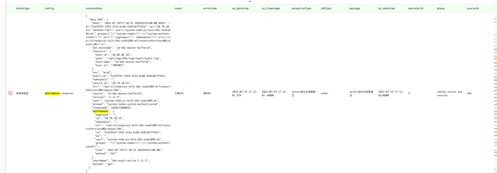
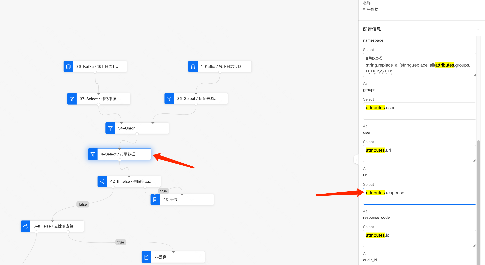
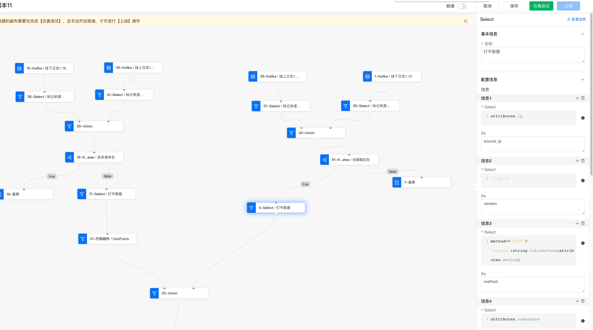
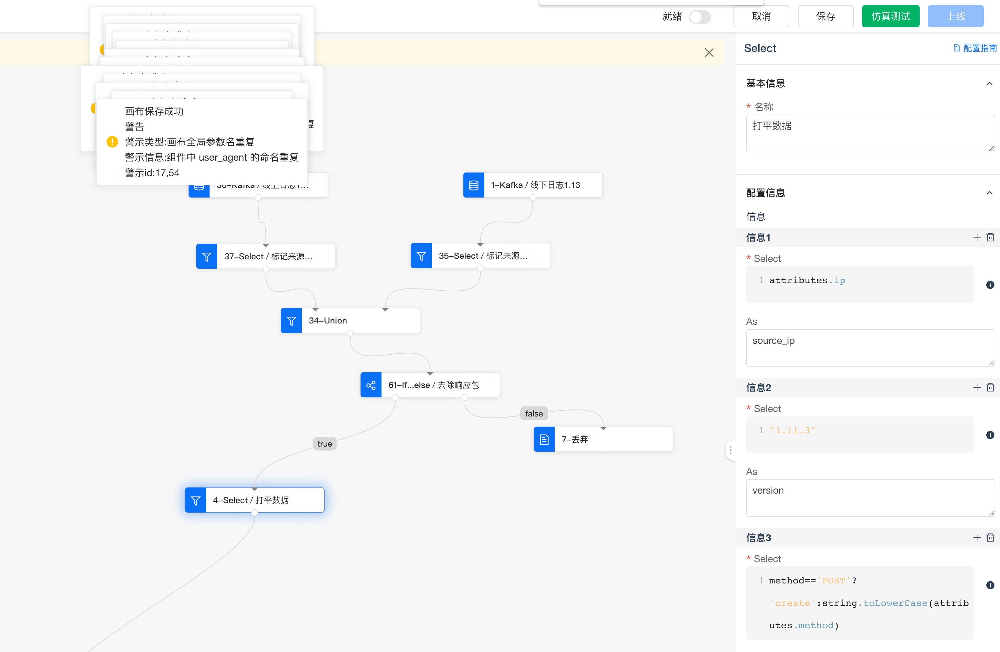
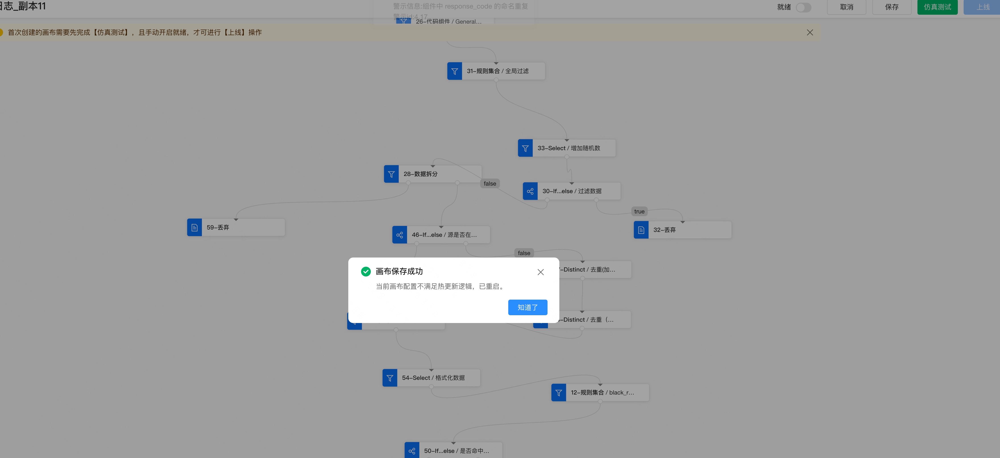
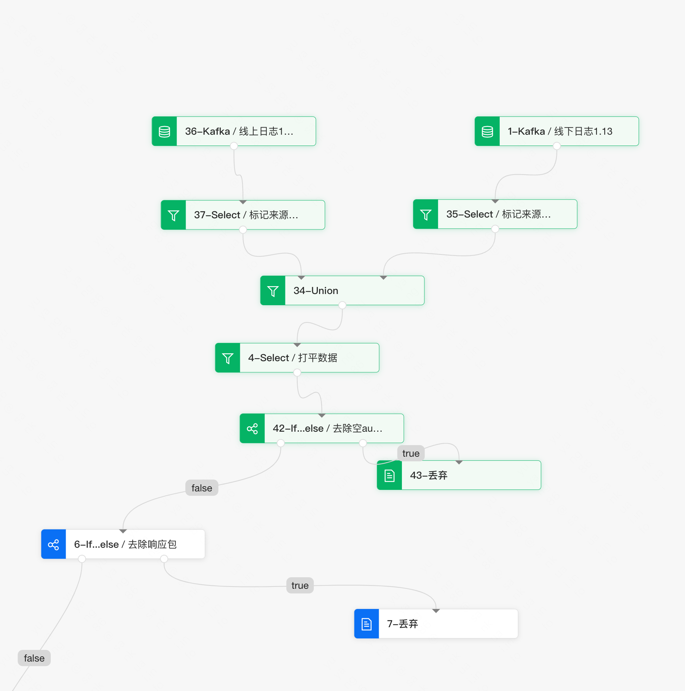
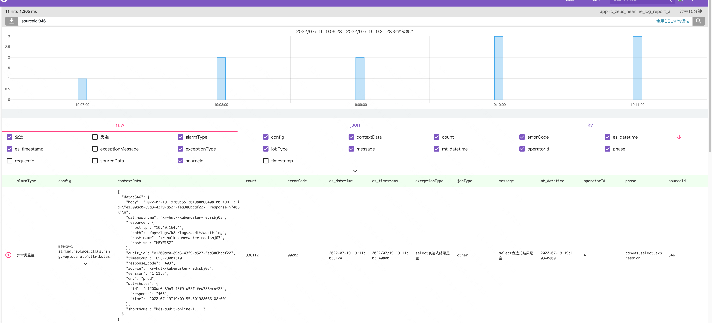

画布错误日志排查实践
https://zeus.sankuai.com/data_zeus_static/#/paint/detail?id=346&version=1
日志中心链接

几个关键的参数：
sourceId : 实时作业ID
operatorID： 画布算子ID
config：如果select算子中有多条表达式，报出是哪条表达式报错
contextData : 报错的数据
以此任务为例，找到四号算子的 atribetes.reponse 表达式

是 attributes.response 为nil 影响了正常数据，将其丢弃

question
点击展开内容
【问题1 ，提示内容堆叠到一起】

【问题2，此处自动重启了，且自动重启后一段时间内不能保存，但是我仿真测试需要先保存再仿真】
只修改了select一个内容

在此用 contextData 数据仿真

自动重启后
